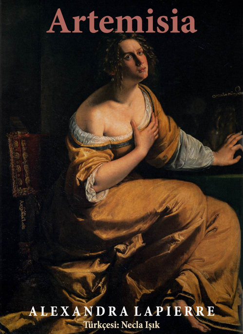

Alexandra Lapierre -Artemisia – Ölümsüzlük için Düello 17. yüzyıl barok İtalya'sından ölümsüzlük uğruna, bir baba ile kızı arasında yaşanan düello..
Artemisia, ün ve özgürlüğe ulaşmak için yaşadığı toplumdaki bütün kuralları yıkan, yapıtlarıyla da ölümsüzlüğe ulaşan tarihteki ilk büyük kadın ressamlardan, Artemisia Gentileschi'nin (Roma 1597-Napoli 1652) serüvenidir.
Roma'da, 161 l yılında Sanatçılar Mahallesindeki bir atölyede, genç ressam Artemisia yeteneğini kanıtlamak için büyük bir savaşım vermektedir. En büyük rakibiyse, resim dalındaki ustası, ünlü ressam, babası, Orazio Gentileschi'dir. Ama kader Orazio'nun kızıyla ilgili planlarını altüst eder: Böylece aralarında, sırasıyla hem babanın hem de kızının kurban ve kazanan olacağı bir düello başlar.
Artemisia, kan bağı olan iki insan arasındaki çılgınca sevginin, şefkatin ve nefretin dramıdır. Sanatın, iktidar ve siyaret anlamına iki ressam arasındaki acıklı rekabetin öyküsüdür. Artemisia, aynı zamanda, güzelliğe ulaşmaya çalışan insanların, bu tutkularının ortaya çıktığı Roma, Floransa, Napoli, Venedik, Londra gibi kentlerin tarihidir.
KURŞUN MADENİ